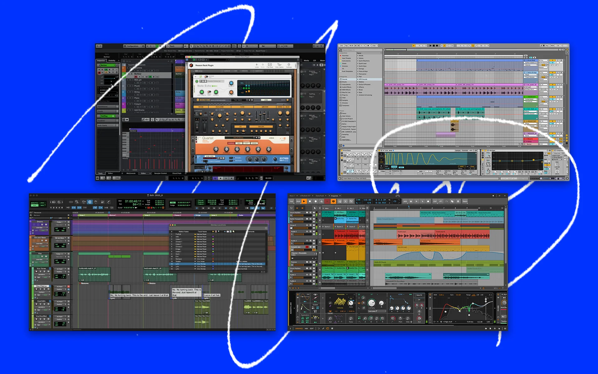

¡Bienvenido a este sitio web introductorio sobre la producción musical! En esta página hablaremos sobre hardware, software y técnicas de producción musical.
Al momento de comenzar con este mundo lo primero que debes de realizar es tener en mente qué DAW utilizarás, y te preguntarás ¿A qué nos referimos con DAW? Y bueno, un DAW (Digital Audio Workstation o Estación de Trabajo de Audio Digital) es un programa de computadora que sirve para grabar, editar, producir, mezclar y masterizar música y audio. En la industria tenemos varias opciones, algunas de pago con versiones gratuitas o algunas otras que son totalmente gratis.

Pero cabe mencionar que en realidad para poder comenzar y crear buenas maquetas basta con tu equipo de trabajo, audífonos y obviamente tu programa ya instalado en tu computadora.